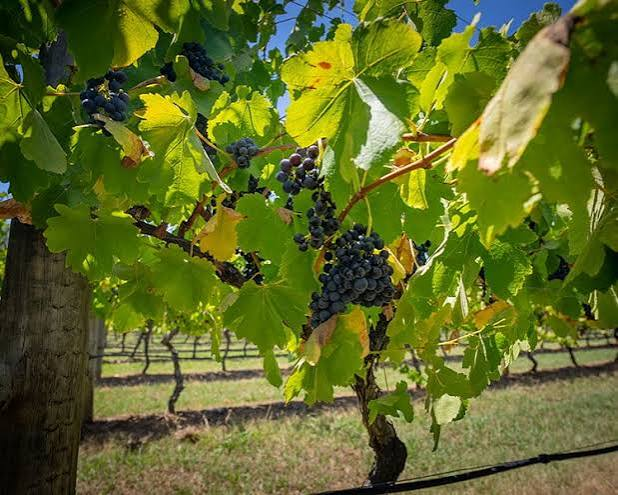

It All Started in 1972
The history of grape farming in Bauang began in 1972 when Avelino Lomboy established Lomboy Farm in Barangay Urayong.
Despite the tropical climate of the Philippines, he experimented with growing grapes and eventually proved that grape cultivation could succeed in the area.
His success inspired other families to establish their own grape farms, helping develop Bauang into a known destination for grape production and farm tourism.
1972
The beginning of the pioneering grape farm in Bauang.